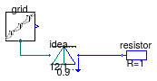

Package with example models
This package contains examples for the use of models that can be found in Buildings.Electrical.AC.OnePhase.
Extends from Modelica.Icons.ExamplesPackage (Icon for packages containing runnable examples).
| Name | Description |
|---|---|
| Generator with a load and grid connection | |
| Model of a DC load connected to the grid |
 Buildings.Electrical.AC.OnePhase.Examples.GeneratorLoadGrid
Buildings.Electrical.AC.OnePhase.Examples.GeneratorLoadGrid
Generator with a load and grid connection

This model illustrates a generator, an inductive load and a grid connection.
The power output of the generator is equal to its input signal, which is
a ramp function.
The output grid.P shows
the actual and apparent power, the power factor and
the phase angle.
Extends from Modelica.Icons.Example (Icon for runnable examples).
Buildings.Electrical.AC.OnePhase.Examples.GridDCLoad
Model of a DC load connected to the grid

This model illustrates the use of a model for inductive load. The circuit on the left hand side uses an inductive load, whereas the circuit on the right hand side uses a resistor and inductance in series. The parameters of the inductor and resistor are such that the real power and the phase angle are identical (up to the numerical precision of the parameters) for the two systems.
Extends from Modelica.Icons.Example (Icon for runnable examples).